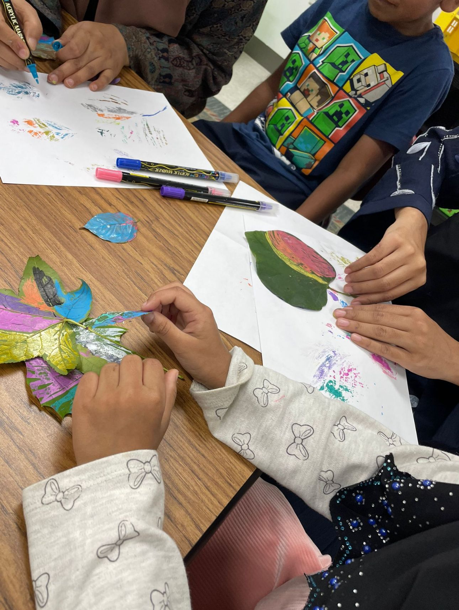

Where I make things
I enjoy crafting in various settings. Sometimes, I’ll work on my projects on campus or when I have a break from assignments. However, I mostly craft at home, where I have more space and access to materials. I also find opportunities to do it while volunteering, which allows me to share my passion for arts and crafts with others.
| Days That I practice | Times | Location |
|---|---|---|
| Monday and Wednesday | 8:00pm - 10:00pm | UREC |
| Tuesday and Thursday | 6:00pm - 9:00pm | Home |
| Fridays | No practice | N/A |
| Saturday and Sunday | 10:00am - 4:00pm | Home |